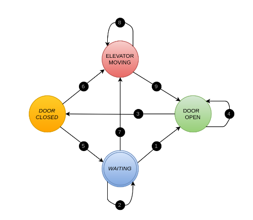

Tested bus and PCAN adapters using PCAN-view as a group. All nodes on the bus are operational
Started writing code for closed loop feedback testing as a group
Inherited CAN protocol designed by Tommy and his group
Completed detailed testing plan document for all Phase one validation requirements. Test is broken into two main sections:
Call station and Elevator Car Testing
Testing up/down switches and lights of each call station
Testing open/close switches and lights of the elevator car
Testing the floor slection switches and lights of the elevator car
System Level Testing
Testing elevator system to ensure it covers at least three floors, with one CAN node per floor
Testing the system capability to detect the location of the elevator car (with the distance sensor) and its ability to distribute this information to all call-stations for displaying on the appropriate displays
Ensuring the system an detect up/down requests at any floor and switch on the respective LED
Ensuring the system can detect floor selection at any floor and switch on the respective LED
Ensuring the system can detect a door open/close request at any floor and switch on the repective LED
Helped Ovi and James debug code for sending/receiving via CAN bus between two Axmans
Got filtering working (multiple filters can now be set for each node)
Issue was with that we used code from the AN3034 appnote for sending and code from Bill (Stefanuk) for receiving. It turns out that we were applying filters in the CANinit() function from the appnote and again in Bill's MSCANlisten(). The second time we applied the filter we overwrote the previous filters that were applied.
After solving this issue we are able to apply multiple filters and have confirmed that sending
Started setting up seperate projects for each node type with the appropriate filters. Want to have a header file common to all nodes that defines interconnection of the system (filters, etc)
Tuesday May 30, 2017
Created state machine based on a FIFO queue. Need to confirm/chat with group members to make sure that my design is okay. In a rough outline:
There will be 4 states: (1) FLOOR 1; (2) FLOOR 2; (3) FLOOR 3; (4) MOVING
Transitions between states will occur based on data popped from a stack/FIFO queue:
As requests are received for floor navigation from each floor or the elevator controller, they will be pushed onto the queue. The supervisory controller will ensure that no identical floor requests will be stored consecutively (i.e., if the incoming floor request is the same as the last pushed onto the stack, it will be ignored)
The supervisory controller then moves between states by popping from the stack
Possible issues: this does not consider the state of the door open/closing. There should possibly be an intermediate state between (any of the) FLOOR and MOVING states:
Once the state transitions from MOVING to some FLOOR, it should enter a WAITING state where the door is intially assumed open. Then, before moving to the next floor (indicated by popping data from the stack), it waits for the door to close. This brings to light several questions regarding my current design of the state machine:
Should there be addional OPEN/CLOSED states, within the WAITING state?
Solution 1: No additional states: the door is initially considered open upon arrival in the WAITING state. An item is popped immediately and the supervisory controller is already aware of its next transition, but it waits on a message indicating the door has closed before transitioning.
Solution 2: Maybe we could replace the WAITING state with OPEN and CLOSED states?
What happens when the Car Controller requests a move to a floor and there is an item in the stack waiting to be popped? How is this handled?
Example: Floors 1 and 2 have both called the elevator respectively, so the stack contains two items to be popped (FLOOR 1 will be popped first). The elevator is currently at floor 3 where it has just picked up a person who requests floor 2 (on the Car Controller). Where does the car go? Does their reqest get pushed onto the stack or is there priority for the person in the car already?
Started thinking about how we will interface the Linux-based Supervisory Controller with the PCAN interface. Considered Python for ease of implementation (can be done with prewritten libraries) but I have never programmed in Python so the learning curve will be more of a hinderance than the benefits could provide :(
Instead, will use the C++ libraries/API that are available from PEAK-Systems (maker of the PCAN). I ran into some installation issues while trying to install the libraries at home. I am hoping this will be remedied once I have the device connected to the computer. If not, I will need to ask Tommy or Riley who I believe have this working already.
The issue was that I did not have a required library installed: libpopt-dev package, which was specified in the driver's user manual under System Requirements. This was installed using 'sudo apt-get install libpopt-dev'.
Wednesday May 31, 2017
Established communication between Linux VM (terminal) and Windows host (PCAN-view) over CAN-bus. Steps followed are outlined on this blog post (thanks Riley!). Just in case this site is ever unavailable, these were the basic steps after installing the drivers and libraries:
Load the driver/module: "sudo modprobe pcan"
Check that the driver was installed properly: "cat /proc/pcan"
Change baud rate (250kbit/s in this example): "echo "i 0x011C e" > /dev/pcan32"
Observe incoming CAN messages: "cat /dev/pcan32"
Using ATOM editor to write SupervisoryController Linux code in C.
Installed project manager for ATOM using "apm install project-manager"
Using example code available in the PCAN_Basic_Linux-4.1.1 libraries, I was able to get sending and receiving working but I had to make some slight adjustments to the example code:
In the pcanwrite code:
#define PCAN_DEVICE was changed from PCAN_USBBUS2 to PCAN_USBBUS1
Baud rate set to 250kbps by passing PCAN_BAUD_250K (second argument in function CAN_Initialize()
In the pcanread code:
Baud rate set to 250kbps (same change as in the pcanwrite code outlined above)
Discussed state machine with Ovi and James:
The stack/FIFO list will hold a maximum of three elements: one for each floor. It cannot hold duplicate requests.
The state machine will have a MOVING state and intermediary transitions:
OPEN between MOVING and every FLOOR
CLOSED between any FLOOR and MOVING
Having major issues compiling my own source files using the headers that come in the libraries. There appear to be linking errors...I traced most of them by finding the files that were missing and including them as appropriate (sometimes it was a specific definition within a file that is "undeclared", sometimes it was an entire header file that was missing - "no such file or directory"). However, I finally was able to compile all the separate source code into objects, but when I attempted to link them and output an executable, there were "undefined references to '.....' (files?) that don't appear to exist in ANY of the headers or C files within the libraries. Are these dynamic libraries that need to be added? Unfortunately, I cannot tell from the example code because it is compiled with a makefile with syntax that I do not recognize in the slightest. Going to ask Michael Galle about this tomorrow because all the other groups implemented this portion in Python
Thursday - Friday (June 1-2), 2017
Got code to compile after carefully decoding the makefile. The use of variables was tripping me up, but I managed to convert the makefile into my own so that the code can be compiled using it from the root directory of the supervisory controller program.
At this point it was just a matter of putting the logic into effect. The basic main loop implementation was the following:
A polled read on the CAN bus via the PCAN dongle
A step through the state machine
The state machine implementation was as follows: (Detailed explanations of states and transition conditions are outlined in the document "Supervisory Control Program Implementation":

Performed system testing on Friday. Went through our test plan and several issues were found:
I accidentally implemented a LIFO queue instead of a FIFO queue
James' floor lights all go on when the elevator is between floors.
James needs to implement floor call lights and Ovi needs to implement a floor call light for each floor.
Monday June 5, 2017
Everyone solved their issues. Performed final system testing and the system is working as required.
Created project schedule
Started Phase 1 test plan
Tested bus and PCAN adapters using PCAN-view as a group. All nodes on the bus are operational
Started writing code for closed loop feedback testing as a group